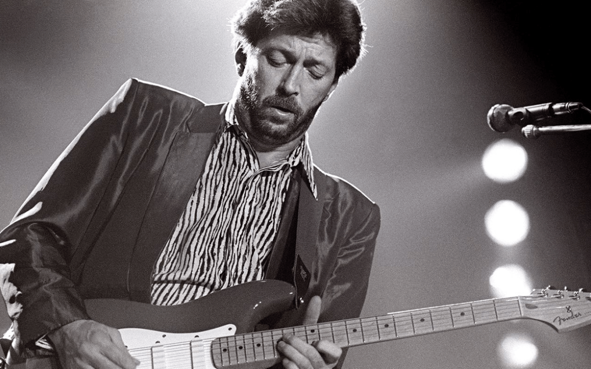

Popular musicians of Fender players
Eric Clapton
(born 1945), a Grammy-award-winning guitarist who originally played Gibson guitars but has been a Stratocaster enthusiast since 1967. Clapton bought his first Stratocaster that year while a member of Cream, Brownie, which was later used on "Layla". Blackie, a composite of three different guitars, went into service in 1970 and was regularly played until its retirement in 1985. It was sold at charity auction for $959,500 in 2004. In 1988, Fender introduced the Eric Clapton Stratocaster, the first model in their Signature series. Clapton has been a long-standing client of the Fender Custom Shop.

Jimi Hendrix
Jimi Hendrix (1942–1970), known for developing blues in a modern context, Hendrix' main stage guitar through most of his short career was a Fender Stratocaster.In 1990, the white Stratocaster used by Hendrix at the 1969 Woodstock Festival sold in a Sotheby's auction for $270,000, a record price at the time. Although Hendrix played left-handed, he did not normally use a custom left-handed Stratocaster. Instead, he is noted for playing a conventional right-handed Stratocaster flipped upside down because he preferred to use the controls in that position. Like Buddy Holly, Hendrix was responsible for a large increase in the Stratocaster's popularity, especially in his favorite finish, white. In reference to his famed on-stage Stratocaster burning, Hendrix is quoted as saying, "The time I burned my guitar it was like a sacrifice. You sacrifice the things you love. I love my guitar.In 1997 Fender produced a limited edition Hendrix tribute model Stratocaster.

Mark Knopfler
Mark Knopfler (born 1949), known for his work with British rock band Dire Straits. Knopfler is known for his very particular and unique fingerstyle playing. The song “Sultans of Swing“, from the first album of Dire Straits, in 1978, was a huge hit that showed the characteristic tone and technique displayed on Knopfler's red Stratocaster. He used the Fender Stratocaster throughout his entire career, in Dire Straits (especially since 1978 and 1982) and solo career, him being a great Fender Stratocaster enthusiast. Fender now produces his Signature Stratocaster.
Kurt Cobain
Kurt Cobain (February 20, 1967 – April 5, 1994) was an American singer, songwriter, and musician. Born in Aberdeen, Washington, Cobain formed the band Nirvana with Krist Novoselic and Aaron Burckhard in 1987 and established it as part of the Seattle music scene which later became known as grunge. Nirvana's debut album Bleach was released on the independent record label Sub Pop in 1989.The Fender Mustang Lake Placid Blue guitars played by Kurt Cobain during the filming of the video for "Smells Like Teen Spirit", shown at the Seattle Experience Music Project
John Lennon
John Lennon (1940–1980), the Beatles' rhythm guitarist, acquired a 1961 Stratocaster during the 1965 sessions for Help!. It was used on the track "Nowhere Man". Lennon also used the guitar during the Sgt. Pepper sessions. A different Strat was used on the Imagine album. John Lennon acquired a candy apple red "Strat" with 22 carat gold electroplated brass hardware around 1980. A photo of him playing this guitar in bed one morning in late 1980, shortly before his death, was used an inner sleeve of the album The John Lennon Collection